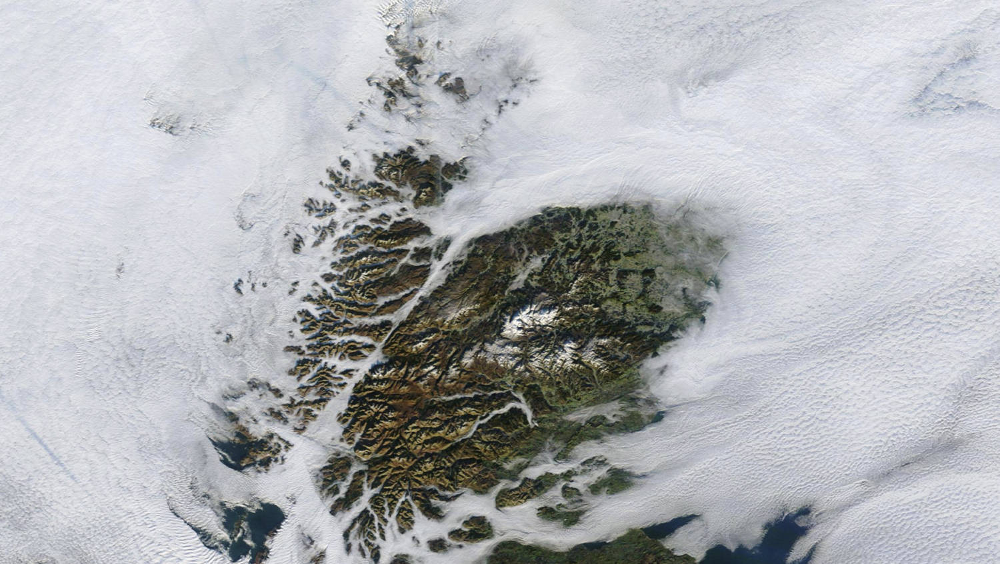
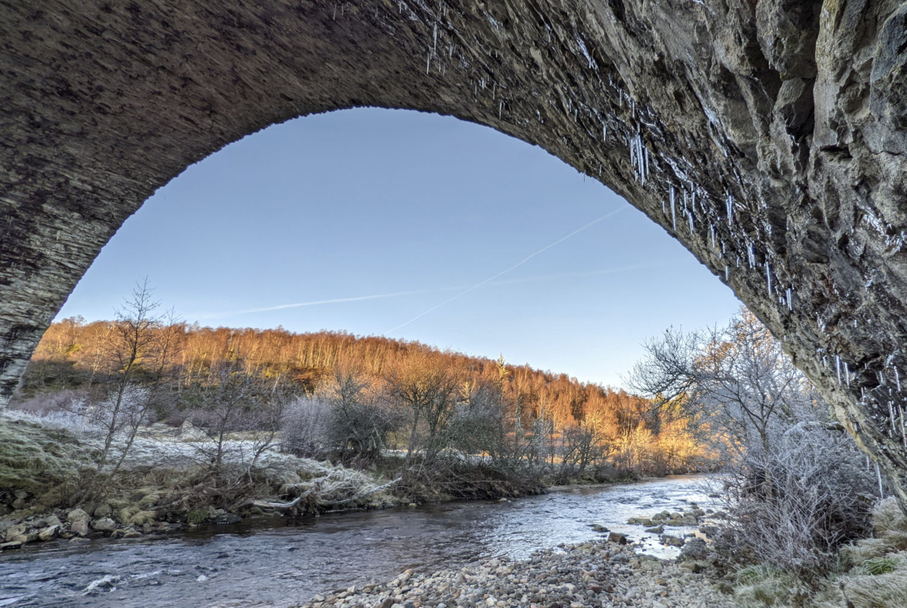
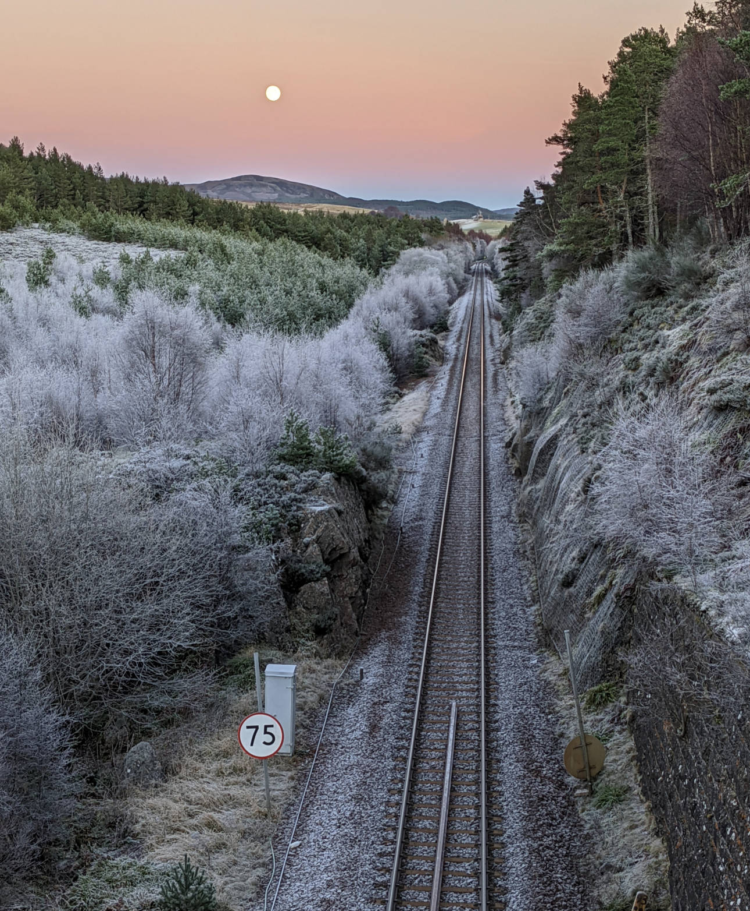
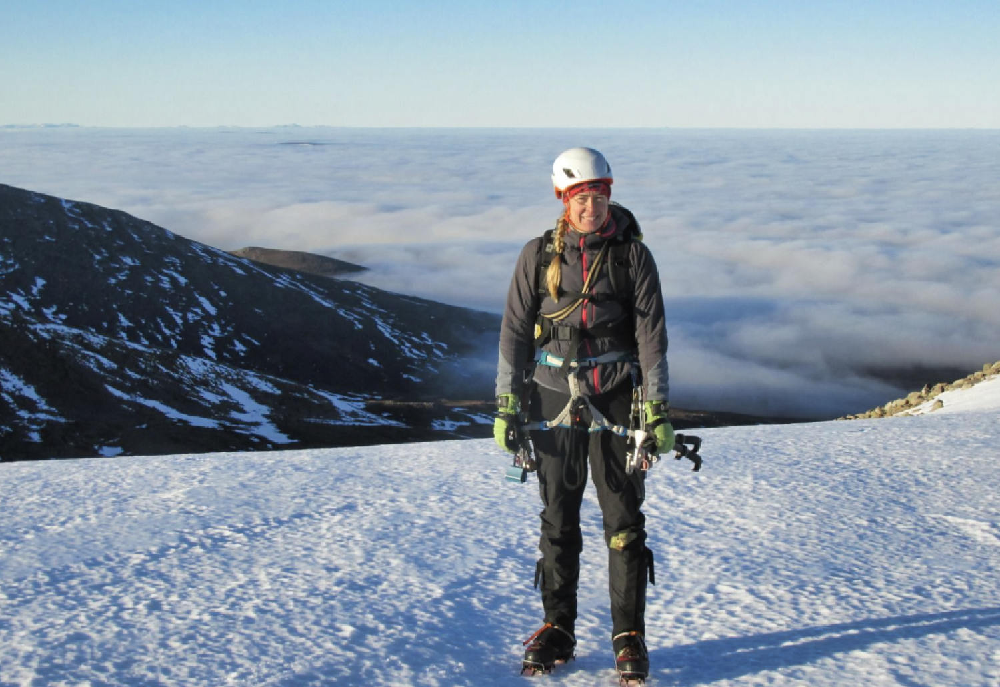
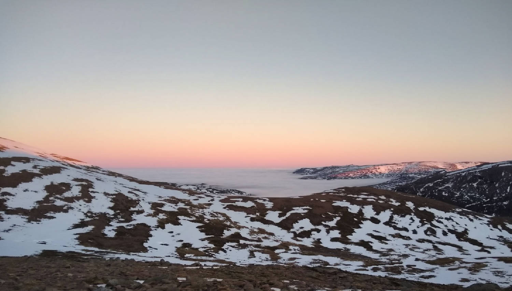
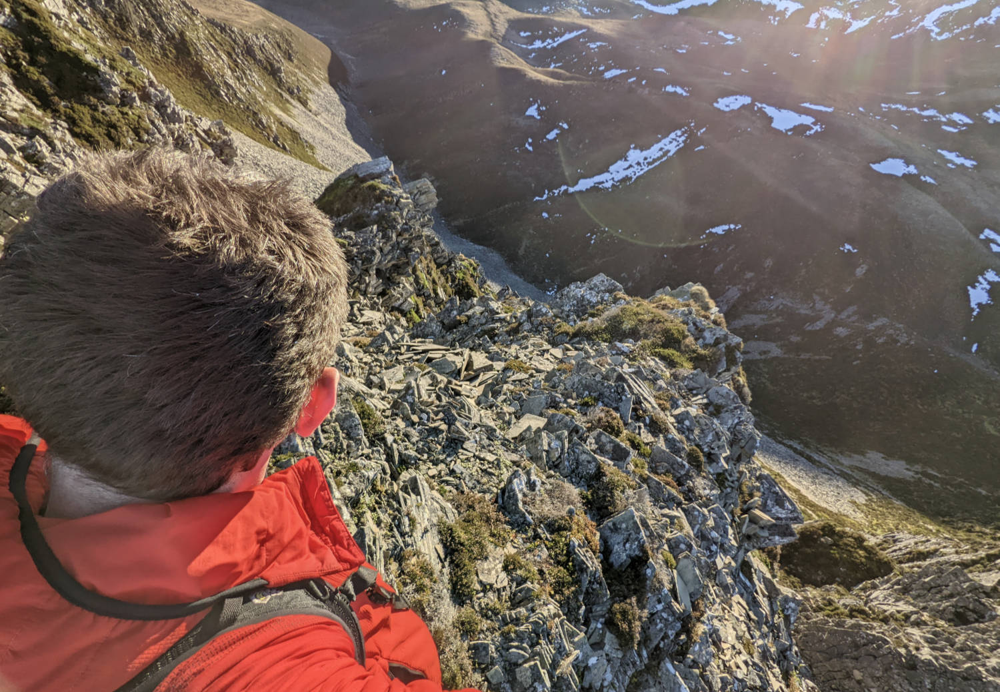
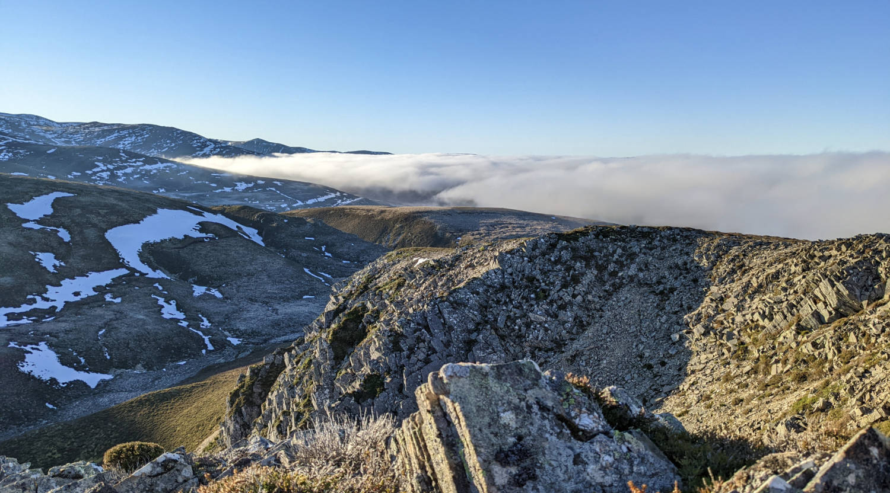
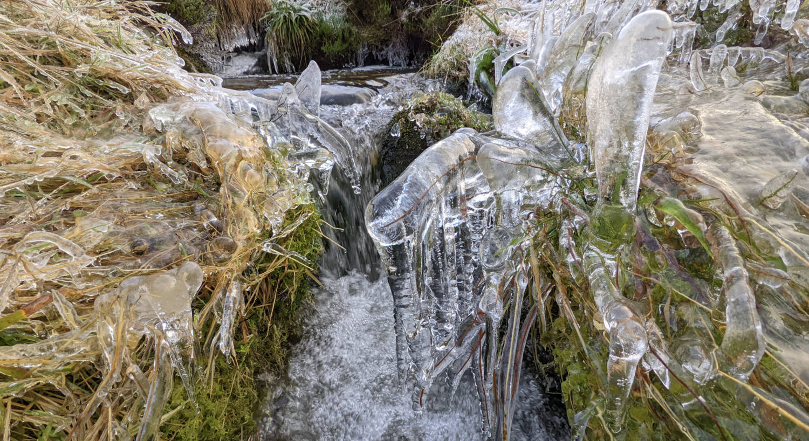

The whole of Scotland was having an interesting phenomenon: a temperature inversion. This meant the temperature was lowest at low elevations, and apparently around +10 degrees Celsius on the tops of the hills, near 1000 metres. This caused the clouds to settle below the warmer air. From space (photo from NASA) it looked very cool, you can imagine what Scotland would look like with a massive sea level rise.

Saturday: We live at sea level, below the clouds. We didn't feel like a hike to a top, but also didn't want to stay inside in our gray, cloudy home base. We thought a bit higher ground should get us out of the clouds. And indeed, as soon as we drove up, we left the clouds behind and below us and got in a wintery sunny landscape. Higher might be warmer, but there is something to say for cold as well! We brought our bikes to bike around the countryside between Slochd and Carrbridge, where the humidity and cold had created a winter wonderland for us to explore.


Have a look and enjoy this tranquil bike ride with us.
Sunday: We couldn’t resist to have a look at the temperature inversion from higher up. Annette was going for a climb in Coire an T-Sneachda, a climbing area in the Northern Cairngorms just an hour from our home. Even though the snow had melted off the rocks, the gullies still had amazing quality snow in them, so that Annette and climbing partner John were able to do their climbs.

There was no wind, the air temperature was warm, and the sun still felt warm. Such amazing conditions are rare for winter climbs, and it was very enjoyable. Once above the clouds, it looked like all the other tops were islands in a sea of clouds. So amazing.

Leigh opted for a sunny hill walk instead. The Cairngorms can be quite busy and especially in such special conditions the high car park gives easy access to higher grounds for climbers, skiers, walkers and dogs. Just a tiny bit lower, there is another car park, from where you leave the crowds, and are on your own. Leigh was just above the clouds, and could see the clouds come in while enjoying amazing views to the higher Cairngorms.



Monday: work time. The inversion was still ongoing, so Annette decided to take a bivi bag and a warm sleeping bag, and sleep the night on top of a nearby hill with friend Karen. They left in the evening and got back in time for work. The moon was almost full, there was little wind, but it was still cold! The snow had melted, but the frost had covered everything, so that the whole world seemed to be covered in glittering diamonds. The world below them was still covered in clouds, and the other hills sticking out of the clouds were also covered in frost, lighted by a bright moon. A magical sight.
So many different ways to enjoy the temperature inversion!